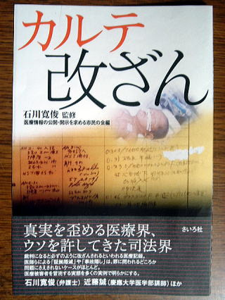

書評コーナー
薬のチェックは命のチェックで取り上げた書籍を紹介しています。
季刊誌17号より
カルテ改ざん
石川寛俊 監修 / 医療情報の公開・開示を求める市民の会 編／さいろ社
患者やその家族が医療者側に対して疑問や不信を持ち裁判になると、ほとんど必ず改ざんされるといわれる医療記録。医師らによる証拠隠滅や事故隠しは、罪に問われるどころか問題にさえされないケースが多かった。 その実態を告発する集会が、2004年７月に大阪で行われた。そこでの報告を元にまとめられた本書は、監修の石川寛俊弁護士が言うように「その実態が初めて俎上に乗せられ」たものだ。 編者である「医療情報の公開・開示を求める市民の会」事務局長の勝村久司さんは、カルテ改ざんは医療被害者を冒涜するものであると述べている。証拠を元に公平な判断を下すはずの検察庁や裁判所もまた、ウソと認めながらそれを採用し放置してきた。
本書「第１章」では、そんな事例が「改ざん前」「改ざん後」のカルテ写真とともに、実名で次から次へと報告される。「第２章」では慶応大の近藤誠氏らがその背景について明快に語り、法整備などの必要性を説く。（ま）
■四六判：136ページ／￥1,200 （税別）
ご購入はこちらからできます